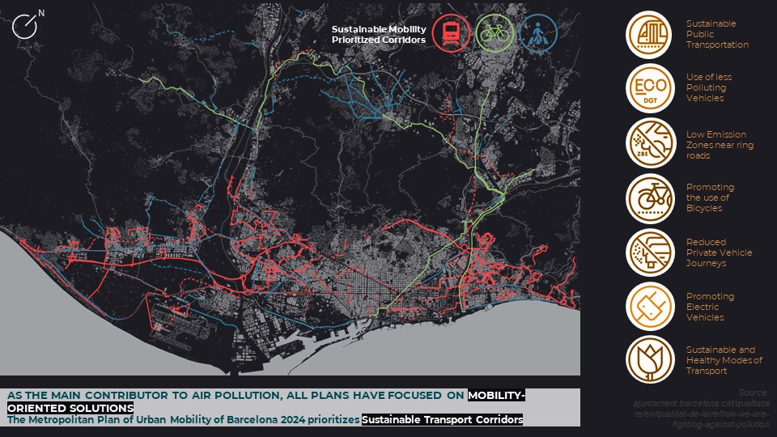
Team: Juan Camilo Giraldo · Nupur Sircar · Siddharth Nambiar
From Pollution To Pollination
Leveraging air dynamism, turbulence, and wind pollination to build regenerative green corridors that clean the air along the Besòs basin in Barcelona.
1. Introduction
Urban air quality in Barcelona is shaped by both natural dynamics and human-induced pollutants. Local pollutants such as NOx and PM10 are driven largely by ground transport and industrial activity, with significant implications for liveability and public health.
While existing policies concentrate on mobility solutions, this project explores whether complementary ecological strategies can be layered on top of current plans—transforming pollution pathways into regenerative corridors.
“From Pollution to Pollination” traces a design journey towards systems that produce cleaner air while restoring ecological balance along the Besòs river basin in Barcelona.
2. Objective
The project aims to leverage air dynamism to set up a self-healing, regenerative cycle. Natural processes triggered by wind are treated as a design driver, activating vegetation that functions as a distributed air filter.
Practically, this means initiating a revegetation cycle that enhances green infrastructure across the Besòs basin, increasing both ecological connectivity and the city’s capacity to absorb pollutants.
3. Context
Air is composed primarily of nitrogen, oxygen, and argon, but its quality is degraded when pollutants such as CO₂, O₃, CH₄, NOx, PM2.5, and PM10 accumulate beyond safe thresholds.
CO₂ and O₃ are major contributors to global warming, while NOx, PM2.5, and PM10 are responsible for local pollution and long-term health impacts. Barcelona has been actively working to reduce these pollutants, with policies that strongly target emissions from mobility.
Ground transport, port, and airport activities account for up to 70% of NOx and PM10 emissions. However, industrial activities and energy generation still contribute roughly 24% of NOx and 21% of PM10, raising the question: “Can we tackle air pollution in ways that complement existing mobility plans?”
4. Analysis
Understanding where pollutants accumulate and how they move is key to designing effective, place-based responses.
Observations of NOx and PM10 concentration patterns across Catalonia highlight specific locations, many of which lie along the Besòs basin and the urban core of Barcelona. Together with wind speed and direction data, they reveal how dynamic airflows carry pollutants from emission sources across the metropolitan region.
When pollutant concentration layers are superimposed with emission sources and wind fields, a clear correlation emerges between industrial activities and localized peaks in pollution. These stretches along the Besòs become strategic starting points for designing new ecological infrastructures.
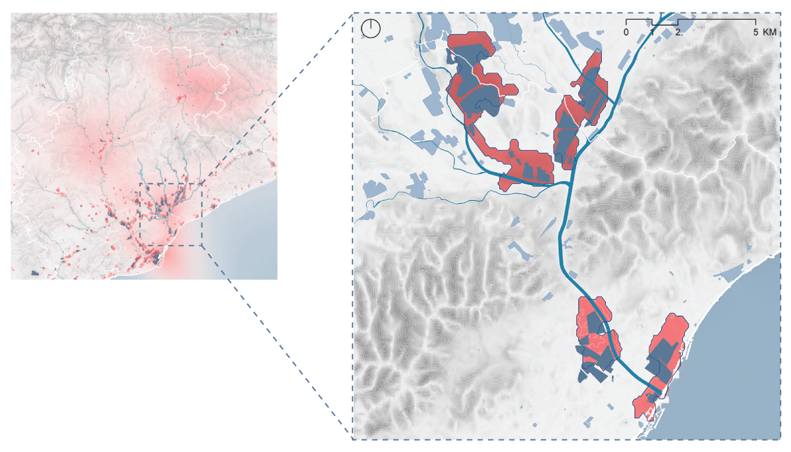
5. Conceptualisation
The project reframes turbulent wind flows as a positive driver. Instead of treating turbulence solely as a carrier of pollutants, it becomes the engine of a regenerative cycle: turbulence supports wind pollination, which drives revegetation, which in turn filters and slows polluted air.
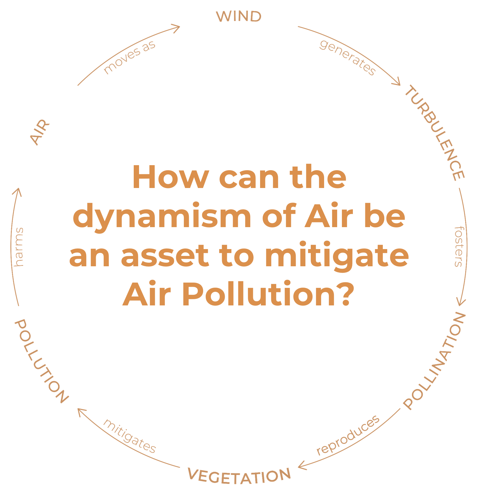
Wind pollination (anemophily) accounts for over 70% of plant species. Wind-pollinated plants produce large amounts of lightweight pollen that can travel long distances, with large feathery stigmas that efficiently capture pollen grains. By aligning ecological design with these processes, the project orchestrates designed turbulence and targeted vegetation to clean air where it is most polluted.
6. Design Materialisation
The design proposes an ecological system that functions as a filter for air pollutants. It is built by connecting:
- Green nodes — concentrated ecological pockets and biodiversity hubs.
- Green corridors — linear stretches that carry and spread pollen across the territory.
These elements are aligned with turbulent wind flows to foster pollination and ignite a self-sustaining cycle of revegetation, gradually increasing land roughness and filtering capacity.
Mobility-prioritized corridors (bus lanes, tram and rail lines, metropolitan bike axes, and enhanced pedestrian routes) become spines of opportunity to attach ecological corridors that mitigate emissions from non-mobility stakeholders such as industry and energy generation.
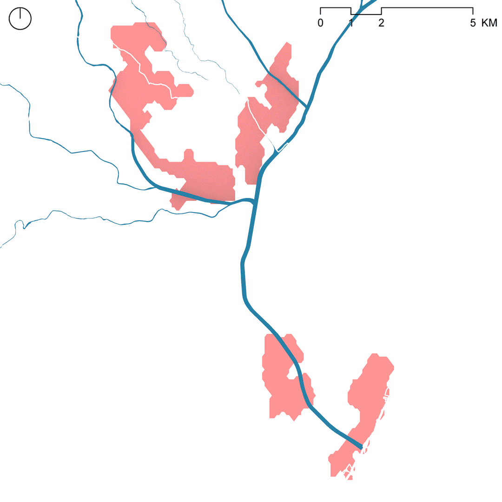
6.1 Design Locations
Zooming into specific sites along the Besòs basin reveals different typologies of nodes and corridors:
- Tres Xemeneies sector — unused brownfield plots suitable for ecological retrofitting.
- El Bon Pastor Polygon — existing green pockets near residential areas and planned adaptive reuse of derelict industrial buildings (e.g. the former Mercedes Benz factory).
- Ripollet and La Llagosta — industrial corridors with varying levels of green space and vacant land that can host clustered interventions.
The Ripollet stretch is used as a prototypical sample showing how green corridors and nodes can grow along existing infrastructure to form a hyper-connected ecological corridor. This correlates with improved air quality and reduced PM10 and NO₂ concentrations.
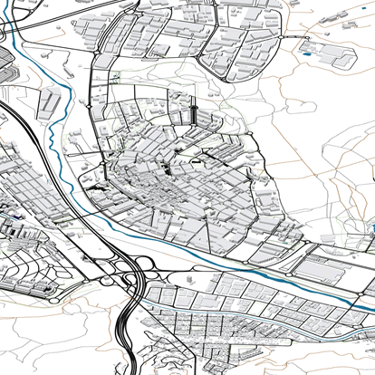
6.2 Key Framework
A decision tree and design matrix guide where and how to intervene, combining human and non-human stakeholders across spatial and non-spatial dimensions.
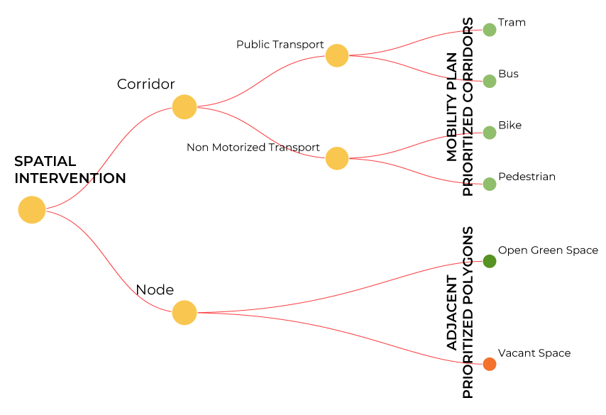
The strategies are mapped into a design matrix that considers both human and non-human counterparts of the city across spatial and non-spatial realms, ensuring that designs for turbulence also serve designs for pollination and the expansion of greens.
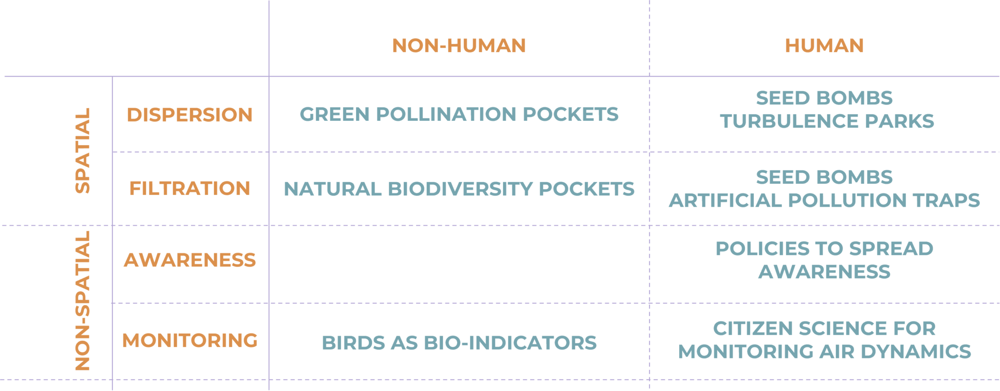
6.3 Spatial Interventions
Spatial strategies begin by cataloguing existing tree species along the Besòs basin and selecting those that are wind-pollinating. This forms a palette for designing green nodes and corridors tuned to local conditions.
Ecological corridors are then plugged into mobility-prioritized corridors, with species selection adjusted to the corridor type (e.g., low vs high canopy for pedestrian paths vs tram lines).

Nodes near these corridors become biodiversity pockets, mixing wind-pollinating trees with species that attract birds and insects. These pockets serve as roosting and habitat spaces and help rebalance local ecosystems.
Vacant open and built spaces host more experimental interventions such as seed bombs and turbulence parks:
- Seed bombs — manual dispersal of clustered seed balls to rapidly trigger revegetation on underused plots or buildings.
- Turbulence parks — structural installations that intentionally manipulate wind speeds to create resonant turbulence, enhancing wind pollination and seed dispersal distances.
Studies show that resonant wind currents can increase pollination and seed dispersal distance by up to 50% in some species.
6.4 Non-Spatial Interventions
Non-spatial strategies focus on awareness and monitoring, engaging both human and non-human stakeholders.
Awareness
Policies and playful tools aim to make air pollution and its stakeholders visible and tangible. “BREATHE” is a game designed for all age groups that explores the effects of different ecological design solutions around pollution sources.
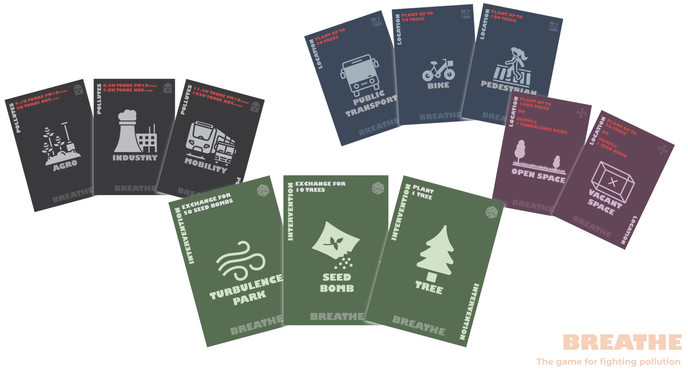
By engaging younger generations—the future decision-makers—these tools aim to catalyze behavioural shifts towards cleaner personal practices and stronger support for ecological interventions.
Monitoring
Monitoring strategies use both bio-indicators and citizen science. Changes in bird nesting and migration patterns act as proxies for improving air quality, while low-cost citizen science kits allow residents to track pollutant levels and wind dynamics.
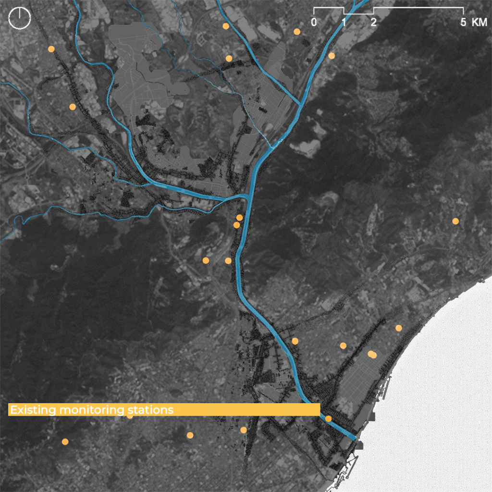
These tools complement official monitoring stations, democratizing environmental data and building a shared evidence base for collective action.
7. Impact and Conclusion
By increasing the number of high-canopy trees, the design raises surface roughness, which fosters turbulence and wind pollination. This accelerates revegetation and expands the network of green filters for urban air.
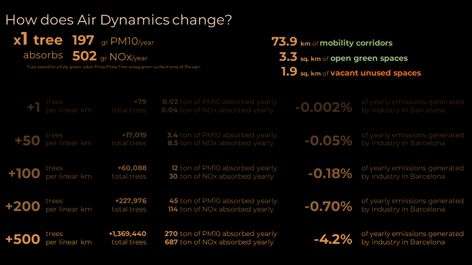
A single full-grown tree absorbs roughly 197 g/yr of PM10 and 502 g/yr of NOx. The design aims to create approximately:
- 73.9 km of ecological corridors
- 3.3 km² of ecological nodes
- 1.9 km² of refurbished vacant spaces
Planting just one tree per kilometer of designed space would marginally reduce emissions, but scaling to 500 trees per kilometer could reduce generated emissions in Barcelona by around 4.2% per year.
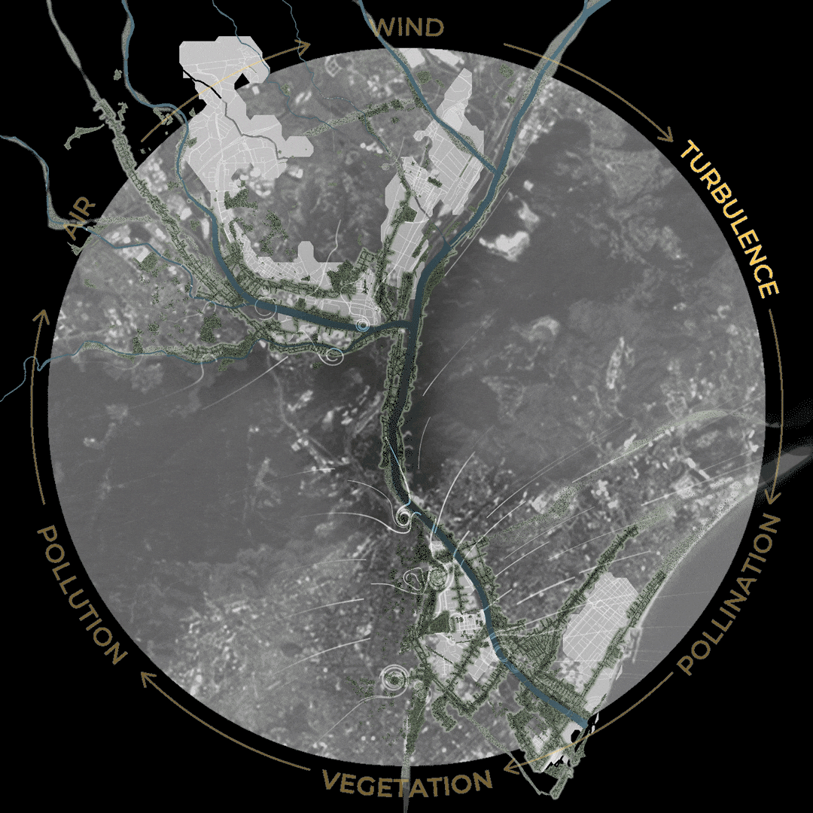
Ultimately, success depends on integrating both human and non-human stakeholders across spatial and non-spatial realms, turning chronic pollution into a catalyst for ecological restoration.
PROJECT INFO
- Location: Besòs river basin, Barcelona.
- Focus: Air quality, turbulence, pollination, and ecological infrastructure.
- Approach: Combined spatial and non-spatial strategies across human and non-human stakeholders.